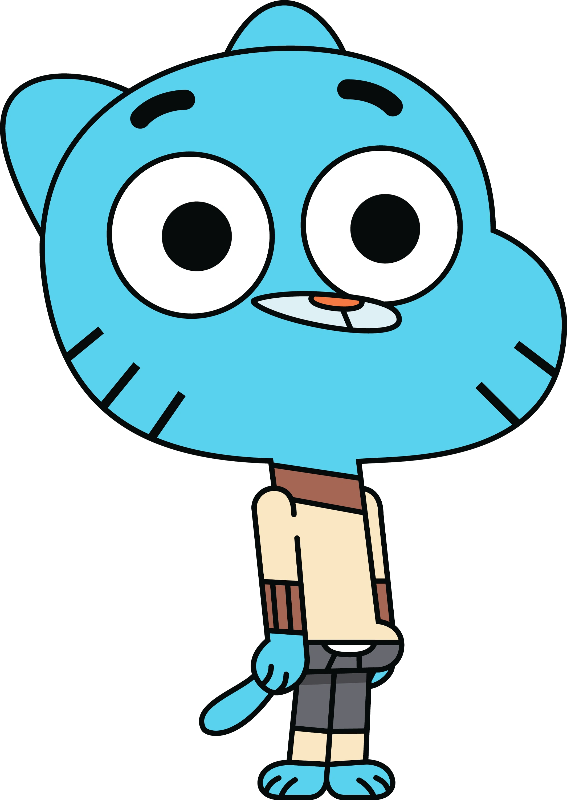
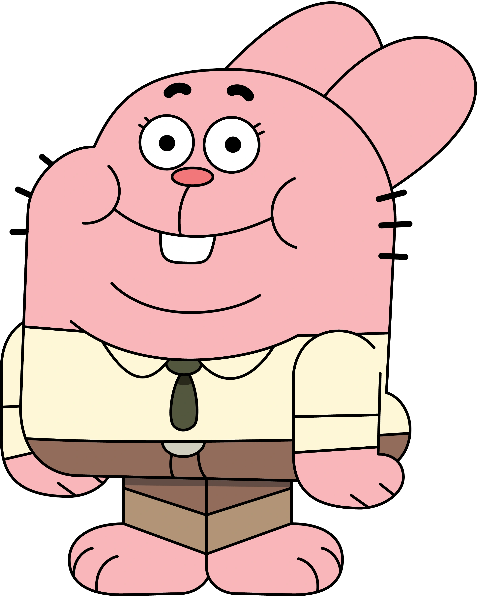
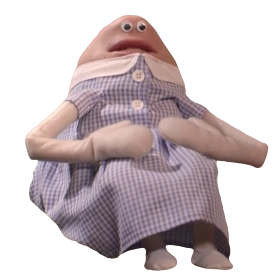

Home
About
Quiz
ABOUT PAGE
what is gumball
The series revolves around the life of a 12-year-old cat named Gumball Watterson and his frequent shenanigans in the fictional American city of Elmore, accompanied by his adopted goldfish brother and best friend Darwin. Gumball's other family members—his intellectual sister Anais and stay-at-home father Richard, both rabbits, and workaholic mother Nicole, a cat—often find themselves involved in Gumball's exploits. Gumball attends school with his siblings at Elmore Junior High, where throughout the series he interacts with his various middle school classmates, most prominently his love interest Penny Fitzgerald. You can find games of the show at cartoon network.
my favourite characters
- Gumball

- Darwin

- Richard

- Sussie
